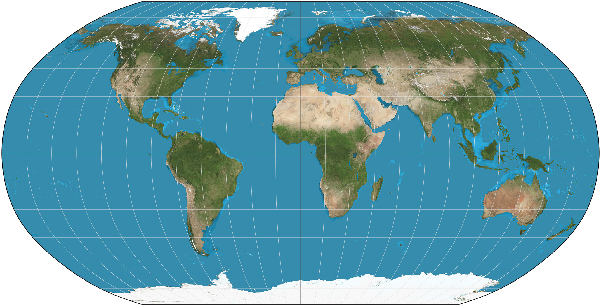

Is ChatGPT A Map App?
November 9th 2024
[Development In Progress]
No - at least not at my prompting ability
Today is day 9 of the #30DayMapChallenge and today‚Äôs theme is ‚ÄúAI only‚Äù which in my opinion feels a little more forced than anything, but I also have more opinions than experience, something I very much hope to remedy by practicing more, so without further ado let‚Äôs go.üí™
I wanted to start off with something simple that I though ChatGPT would have an easy enough time with, since ChatGPT is trained primarily off online data and there are plenty of SVGs online I thought I would get ChatGPT to try generating an image in the SVG format from a prompt.
To refresh everyone’s memory on what a SVG is, my first question was this:
What is a SVG
here is the response provided by ChatGPT:
An SVG (Scalable Vector Graphics) is an XML-based format for vector graphics that allows images to scale without losing quality. SVGs are commonly used for icons, logos, illustrations, and other graphics on the web because they can be resized to any dimension and maintain their crispness. This format is particularly valuable for responsive design and high-resolution displays. Some advantages of SVGs include: 1. Scalability: Vector-based, so they don’t pixelate at any size. 2. Editability: XML code makes them easy to manipulate with CSS and JavaScript. 3. Animation: SVG elements can be animated, adding interactivity and motion. 4. Small file size: Ideal for icons and web graphics, as they’re typically lightweight. SVGs can be created using design software like Adobe Illustrator or Inkscape, or they can be hand-coded if the graphic is simple enough.“Simple enough” eh? So I decided to give ChatGPT a “simple enough” prompt to start out with:
ChatGPT give me the SVG code for a map of the entire world
It’s response was:
Here’s a simple SVG code for a world map. This uses the popular Robinson projection, which provides a pleasingly balanced view of the entire world. The code below will render an approximate outline of global continents, including basic land and ocean colors. <svg width="800" height="400" viewBox="0 0 800 400" xmlns="http://www.w3.org/2000/svg"> <!-- Ocean background --> <rect width="800" height="400" fill="#a0d8f1"/> <!-- Basic continents outline --> <path fill="#c2b280" stroke="#000" stroke-width="0.5" d="M75,225 l25,-15 20,15 10,-10 20,15 10,-20 40,-30 20,-10 25,5 25,-10 l15,20 l40,10 l10,-20 l20,10 l15,25 l35,-10 l30,15 l15,-15 l10,20 l15,10 l10,25 l20,-10 l15,25 l-20,20 l-25,-15 l-10,15 l-20,10 l-20,25 l20,15 l10, 25 l10,-10 l25,5 l15,25 l-15,10 l-15,25 l-15,-5 l-10,15 l-25,-5 l-15,15 l-5, 10 l-15,-5 l-25,5 l-10,-10 l-5,10 l-20,10 l10,15 l10,10 l-10,15 l10,20 l-15, 10 l-15,15 l-25,-10 l-5,15 l-10,15 l-15,-5 l-10,20 l-15,-5 l-5,25 l-10,-10 l-5,15 l-5,-5 l-20,10 l-5,15 l-10,-10 l-10,20 l-20,-10 l-10,-15 l-20,5 l-10, -5 l-5,10 l-15,10 l-15,-5 l-10,10 l-15,5 l-15,15 l-25,-5 l-5,20 l-10,10 l-5, -10 l-15,15 l-5,10 l-15,5 l-20,-10 l-5,-20 l-10,5 l-5,20 l-10,-5 l-15,10 l-10, -10 l-5,10 l-10,0 l-15,-10 l-15,-5 l-15,15 l-20,-10 l-15,10 l-10,-5 l-5,5 l-10,10 l-5,5 l-20,5 l-20,-15 l-5,10 l-20,-10 l-5,10 l-20,10 l-15,-15 l-10, -20 l-20,10 l-5,-10 l-15,5 l-20,-10 l-5,-20 l-15,5 l-15,-15 l-5,5 l-15,-10 l-5,-10 l-20,-5 l-5,15 l-20,-10 l-5,10 l-15,-5 l-15,5 l-10,-5 l-10,-10 l-5,5 l-10,5 l-15,-10 l-5,10 l-5,-5 l-10,10 l-15,5 l-15,-5 l-10,-5 l-15,5 l-10,-15 l-10,5 l-5,-10 l-15,5 l-15,-5 l-10,-15 l-5,-10 l5,-5 z" /> <!-- Optional: Labels for continents or regions --> <text x="180" y="120" font-family="Arial" font-size="14" fill="#333">North America</text> <text x="300" y="200" font-family="Arial" font-size="14" fill="#333">South America</text> <text x="400" y="80" font-family="Arial" font-size="14" fill="#333">Europe</text> <text x="520" y="160" font-family="Arial" font-size="14" fill="#333">Africa</text> <text x="620" y="100" font-family="Arial" font-size="14" fill="#333">Asia</text> <text x="740" y="250" font-family="Arial" font-size="14" fill="#333">Australia</text> <text x="520" y="330" font-family="Arial" font-size="14" fill="#333">Antarctica</text> </svg> Explanation: 1. Ocean Background: The <rect> element fills the background with a light blue to represent oceans. 2. Continents Outline: The <path> element contains a simplified outline for global continents, roughly based on their shapes, to give a recognizable map. 3. Text Labels: The <text> elements provide labels for major regions or continents. This SVG provides a basic approximation, but you could refine it by using more detailed coordinates or software-generated paths for a higher-fidelity world map.For a little bit of context, since it’s impossible to draw an round object, and especially an object shaped like earth onto a flat surface, for that reason Cartographers use Projections to approximate the shape of the earth, each projection has it’s benefits and drawbacks, but what’s important for the moment is seeing how ChatGPT compares to regular old Robinson. Here is Wikipedia’s Robinson projection:
By Strebe - Own work, CC BY-SA 3.0, Link
Now let’s take a look at what happens when we embed the code ChatGPT gave us into a SVG:
/** Note I had done many other testing runs before this and I had never gotten output this detailed before, I actually had to modify a considerable portion of this article for this **/
I tried this excercise again, this time with the "dymaxion" projection which is well known for being hard for computers to model, here's the original for reference:
And ChatGPT's version:
Glorious.
Naturally all this is mostly just for fun, ChatGPT is clearly not meant for this kind of task, and if you really want to learn about prompt engineering I’d highly recommend Jeff Su’s video on prompt engineering, he has a really good way of getting consistent results from a fundamentally non-deterministic program.
All that being said, let’s get to what ChatGPT is really good at, taking existing libraries and plumbing them together. This time we will create the same Dymaxion Projection this time using MatPlotLib:
Write a python script that displays a map of the world in the dymaxion projection using matplotlib
Output:
To create a map of the world in the Dymaxion projection using Python, we'll need to use the matplotlib library in combination with the cartopy library. Cartopy doesn’t natively support the Dymaxion projection, but we can approximate it using a collection of polygons for each face of the polyhedron that the projection typically uses. This script outlines the world on each triangular face in an approximate Dymaxion style. Here’s how to set it up: python Copy code import matplotlib.pyplot as plt import cartopy.crs as ccrs import cartopy.feature as cfeature import numpy as np # Define the vertices for each triangular face of the Dymaxion projection # (These are approximate and will give an impression of the projection) triangles = [ # You can add other triangles following this pattern [(0, 90), (180, 0), (-180, 0)], # Approximate top triangle [(-60, 60), (60, 60), (0, 0)], # Example lower triangle # Add more triangles to represent other parts of the world... ] def plot_dymaxion(): fig = plt.figure(figsize=(15, 10)) for triangle in triangles: ax = fig.add_subplot( 111, projection=ccrs.PlateCarree() ) # Convert triangle points to a matplotlib polygon and plot poly_points = np.array(triangle) ax.fill(poly_points[:, 0], poly_points[:, 1], color="#b3cde0", edgecolor="k", linewidth=0.5) # Add land and ocean features to the projection ax.add_feature(cfeature.LAND, facecolor="#c2b280") ax.add_feature(cfeature.OCEAN, facecolor="#a0d8f1") ax.set_global() ax.set_title("Approximate Dymaxion Projection of the World", fontsize=18) plt.show() plot_dymaxion() Explanation: 1. Triangles: The triangles list holds the approximate latitude and longitude of the vertices for each triangular face of the Dymaxion projection. You would need to expand this list to cover the entire globe accurately. 2. Plotting: Each triangle is plotted with a PlateCarree projection (a placeholder for each Dymaxion face). ax.fill() fills each triangle, creating an impression of the Dymaxion projection. 3. Features: cartopy.feature.LAND and OCEAN add a basic world outline. This code provides a visual approximation; however, the Dymaxion projection requires precise geometric transformations for an accurate result, which would typically require specialized GIS tools or projection libraries.Which when run produces:
Very funny ChatGPT.We will try that again, this time telling ChatGPT to use the Robinson projection first since the Dymaxion projection is rather complicated for a computer to work out
Write a python script that displays a map of the world in the Robinson projection using matplotlib
Output:
to display a map of the world in the Robinson projection using matplotlib and cartopy, we can use ccrs.Robinson as the projection for our map. This projection is commonly used for world maps as it provides a visually balanced view of the entire world. Here’s a script that displays a world map using the Robinson projection: python Copy code import matplotlib.pyplot as plt import cartopy.crs as ccrs import cartopy.feature as cfeature # Create a figure with a Robinson projection fig = plt.figure(figsize=(12, 6)) ax = fig.add_subplot(1, 1, 1, projection=ccrs.Robinson()) # Add features: land, ocean, coastlines, borders ax.add_feature(cfeature.LAND, facecolor="#c2b280") ax.add_feature(cfeature.OCEAN, facecolor="#a0d8f1") ax.add_feature(cfeature.COASTLINE, linewidth=0.5) ax.add_feature(cfeature.BORDERS, linestyle=":") # Add gridlines ax.gridlines(draw_labels=True, dms=True, x_inline=False, y_inline=False) # Set the title plt.title("World Map in Robinson Projection", fontsize=15) # Display the map plt.show() Explanation: 1. Projection: We use ccrs.Robinson() to specify the Robinson projection for the map. 2. Features: The cartopy.feature module allows us to add land, ocean, coastlines, and borders to the map for a detailed world map view. 3. Gridlines: The gridlines() function adds latitude and longitude gridlines to the map. 4. Title: We set a title for the map using plt.title(). This code will display a clean and visually appealing world map using the Robinson projection.Result:
Finally, Success! now we will add the labels corresponding to average country AI Excitement (Blue) and AI Nervousness (Red):
Included is a comma separated value list of all the AI excitement and AI nervousness of many of the countries on the map, add the excitement value as a blue label on it's respective country and nervousness in red. "Thailand,0.8,0.57
South Korea,0.76,0.44
Indonesia,0.75,0.48
Mexico,0.74,0.48
Turkey,0.74,0.54
Malaysia,0.74,0.55
Peru,0.72,0.47
India,0.66,0.58
Brazil,0.66,0.51
Singapore,0.65,0.53
Colombia,0.62,0.45
Romania,0.62,0.5
South Africa,0.59,0.53
Chile,0.51,0.54
Japan,0.51,0.23
Spain,0.5,0.51
Italy,0.5,0.5
Poland,0.5,0.38
Argentina,0.46,0.46
Hungary,0.45,0.46
Germany,0.43,0.46
New Zealand,0.43,0.63
Great Britain,0.42,0.65
Netherlands,0.42,0.5
Australia,0.4,0.69
Ireland,0.38,0.62
Canada,0.37,0.63
United States,0.36,0.63
France,0.36,0.52
Belgium,0.35,0.5
Sweden,0.32,0.53”
Output:
To add the excitement (blue) and nervousness (red) values as labels on a world map using Matplotlib, we can parse the data and place each label on its respective country. This example will use Basemap from the mpl_toolkits.basemap library to approximate the country positions for label placement. Here's how you can approach this: 1. Parse the Data: Extract each country, its excitement, and nervousness values. 2. Map Projection: Use Basemap to plot a world map. 3. Label Placement: Plot the excitement (blue) and nervousness (red) values near the respective countries. python Copy code import matplotlib.pyplot as plt from mpl_toolkits.basemap import Basemap # Data as a dictionary with country: (excitement, nervousness) data = { "Thailand": (0.8, 0.57), "South Korea": (0.76, 0.44), "Indonesia": (0.75, 0.48), "Mexico": (0.74, 0.48), "Turkey": (0.74, 0.54), "Malaysia": (0.74, 0.55), "Peru": (0.72, 0.47), "India": (0.66, 0.58), "Brazil": (0.66, 0.51), "Singapore": (0.65, 0.53), "Colombia": (0.62, 0.45), "Romania": (0.62, 0.5), "South Africa": (0.59, 0.53), "Chile": (0.51, 0.54), "Japan": (0.51, 0.23), "Spain": (0.5, 0.51), "Italy": (0.5, 0.5), "Poland": (0.5, 0.38), "Argentina": (0.46, 0.46), "Hungary": (0.45, 0.46), "Germany": (0.43, 0.46), "New Zealand": (0.43, 0.63), "Great Britain": (0.42, 0.65), "Netherlands": (0.42, 0.5), "Australia": (0.4, 0.69), "Ireland": (0.38, 0.62), "Canada": (0.37, 0.63), "United States": (0.36, 0.63), "France": (0.36, 0.52), "Belgium": (0.35, 0.5), "Sweden": (0.32, 0.53), } # Create a figure and Basemap for the world map fig, ax = plt.subplots(figsize=(15, 10)) m = Basemap(projection='robin', lon_0=0, resolution='c') # Draw coastlines, countries, and map boundaries m.drawcoastlines() m.drawcountries() m.drawmapboundary(fill_color='lightblue') m.fillcontinents(color='lightgrey', lake_color='lightblue') # Approximate coordinates for each country label country_coords = { "Thailand": (100.9925, 15.8700), "South Korea": (127.7669, 35.9078), "Indonesia": (113.9213, -0.7893), "Mexico": (-102.5528, 23.6345), "Turkey": (35.2433, 38.9637), "Malaysia": (101.9758, 4.2105), "Peru": (-75.0152, -9.1899), "India": (78.9629, 20.5937), "Brazil": (-51.9253, -14.2350), "Singapore": (103.8198, 1.3521), "Colombia": (-74.2973, 4.5709), "Romania": (24.9668, 45.9432), "South Africa": (22.9375, -30.5595), "Chile": (-71.5429, -35.6751), "Japan": (138.2529, 36.2048), "Spain": (-3.7038, 40.4168), "Italy": (12.5674, 41.8719), "Poland": (19.1451, 51.9194), "Argentina": (-63.6167, -38.4161), "Hungary": (19.5033, 47.1625), "Germany": (10.4515, 51.1657), "New Zealand": (174.8850, -40.9006), "Great Britain": (-3.4359, 55.3781), "Netherlands": (5.2913, 52.1326), "Australia": (133.7751, -25.2744), "Ireland": (-8.2439, 53.4129), "Canada": (-106.3468, 56.1304), "United States": (-95.7129, 37.0902), "France": (2.2137, 46.6034), "Belgium": (4.4699, 50.5039), "Sweden": (18.6435, 60.1282), } # Plot excitement (blue) and nervousness (red) labels on the map for country, (excitement, nervousness) in data.items(): if country in country_coords: lon, lat = country_coords[country] x, y = m(lon, lat) # Plot excitement in blue ax.text(x, y, f"{excitement}", color="blue", fontsize=8, ha="center", fontweight="bold") # Plot nervousness in red, slightly below excitement label ax.text(x, y - 100000, f"{nervousness}", color="red", fontsize=8, ha="center", fontweight="bold") plt.title("AI Excitement (Blue) and Nervousness (Red) by Country") plt.show() Explanation: • Data Dictionary: The data dictionary contains each country’s excitement and nervousness values. • Country Coordinates: The country_coords dictionary provides approximate coordinates (longitude and latitude) for each country to help position the labels. • Basemap Plotting: The map is created using the Robinson projection, with countries and coastlines drawn. • Text Labels: Excitement values are displayed in blue and nervousness values in red, positioned slightly below excitement. Note For more precise positioning, country coordinates might need adjustment, or you could use libraries like geopy for exact coordinates. This script provides a rough approximation for a global visualization.Resulting in the final version of the map:

I think that’s a fitting visualization for the results of our research today, hopefully you found this as entertaining as I did. If you were able to get better results, I'd love to see them, it feels like my unfamiliarity with the tools was definitely a major drawback when making the map and I'd love to learn new ways to use these awesome tools.
Hope you enjoyed the article, I had a blast trying to use LLMs for something the fundamentally weren‚Äôt meant for intentionally, keep experimenting and have fun out there üöÄ.